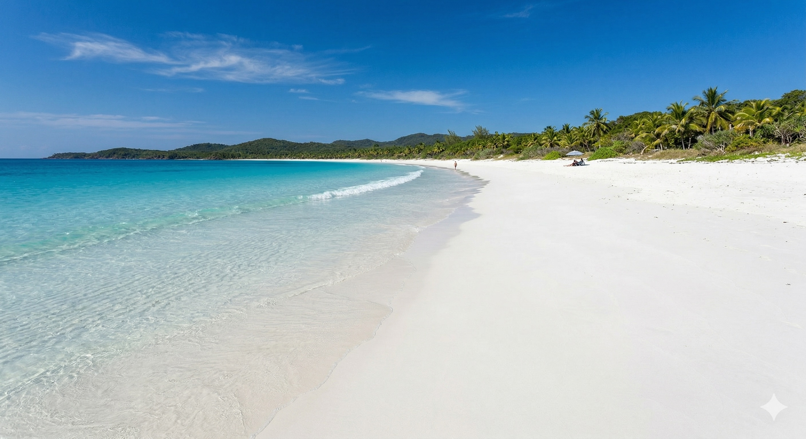
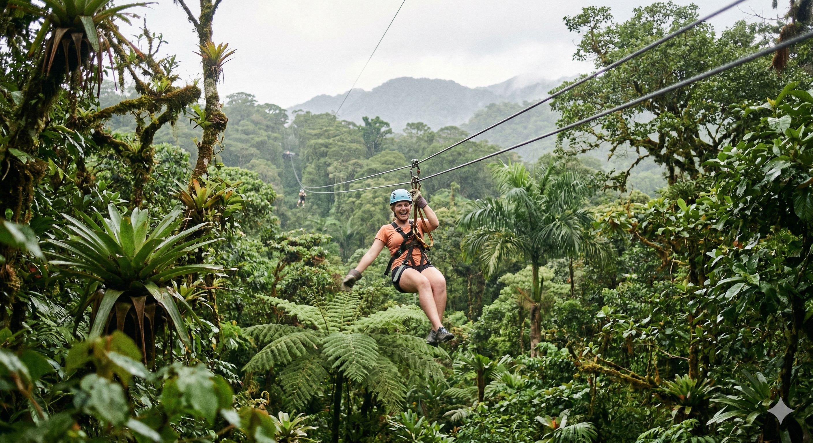

A small, warm island in the Pacific where adventure meets relaxation.
Taniti is a small, tropical island in the Pacific. While the island has an area of less than 500 square miles, the terrain is varied and includes both sandy and rocky beaches, a small but safe harbor, lush tropical rainforests, and a mountainous interior that includes a small, active volcano.
Taniti has an indigenous population of about 20,000. Until a recent increase in tourism, most of the Tanitian economy was dominated by fishing or agriculture. The island is now welcoming visitors while carefully preserving its unique landscape and culture.
Explore ExperiencesThree reasons our visitors keep coming back.

Miles of white sand, crystal-clear water, and very few crowds — just the way you like it.

Zip-line through jungle canopy, hike to volcanic peaks, or kayak along hidden river trails.
Sample fresh seafood, tropical fruits, and the warm hospitality of Tanitian locals.
Everything you need to know before you arrive.